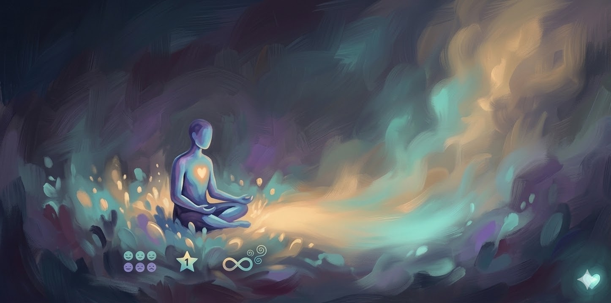

Alegría
Es la emoción que sentimos cuando experimentamos bienestar, satisfacción o felicidad. Nos impulsa a compartir y conectar con otros.
Bienestar emocional, un paso a la vez
Explora lo que sientes, ponle nombre y encuentra herramientas simples para acompañarte hoy.

Nuestro proyecto combina inteligencia artificial y visión por computadora para reconocer emociones faciales en tiempo real. Usando tecnologías como Python, OpenCV y Mediapipe, analizamos los gestos y expresiones del rostro para identificar emociones como alegría, tristeza, enojo o sorpresa. Esta herramienta no solo permite visualizar cómo te sientes, sino que también puede interactuar contigo a través de un chatbot diseñado para ofrecer respuestas empáticas, fomentando el bienestar emocional y la comprensión personal de manera innovadora.
Cuatro emociones principales, explicadas con claridad y sin juicios.
Es la emoción que sentimos cuando experimentamos bienestar, satisfacción o felicidad. Nos impulsa a compartir y conectar con otros.
Surge ante pérdidas, decepciones o cambios. Nos ayuda a reflexionar y procesar lo que nos afecta, y a pedir apoyo cuando lo necesitamos.
Aparece cuando percibimos injusticia o frustración. Puede darnos energía para poner límites y defender lo importante, si lo regulamos.
Es una reacción breve ante algo inesperado. Abre la atención y nos prepara para adaptarnos, ya sea a lo positivo o a lo desafiante.
Te damos un espacio interectivo para que cuentes algún tema de tu preferencia por 30 segundos, mientras la IA analiza tu estado emocional.
Aquí aparecerán los resultados del análisis de tu sesión.
Tus datos faciales no se guardan. Solo se analizan en tiempo real para mostrarte la emoción.
Si estás pasando por momentos difíciles, ansiedad o depresión, no estás solo. Es importante hablar con alguien y recibir apoyo profesional. A continuación, algunos números de ayuda en Tarija:
Recuerda: pedir ayuda es un acto de valentía. Tu bienestar emocional importa.